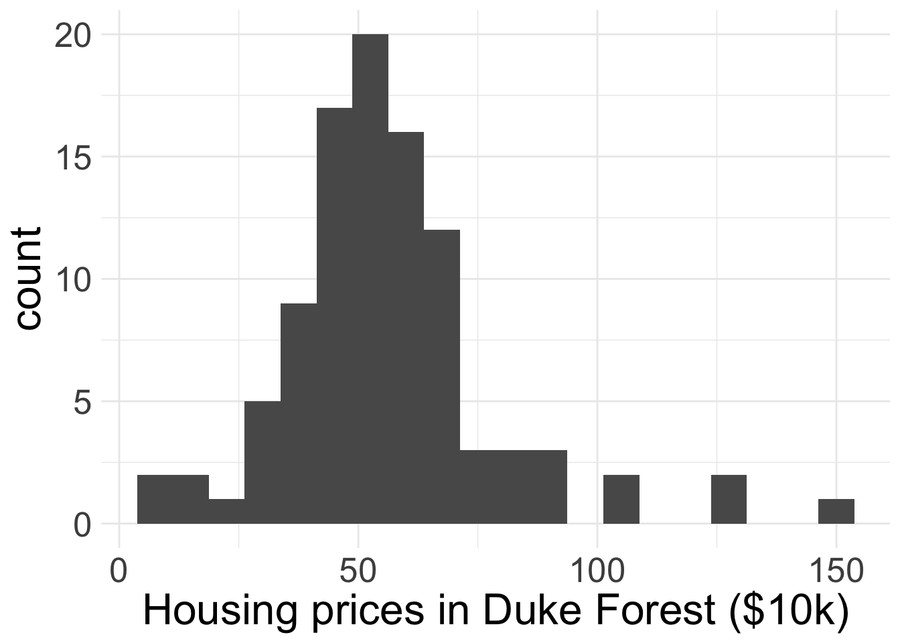
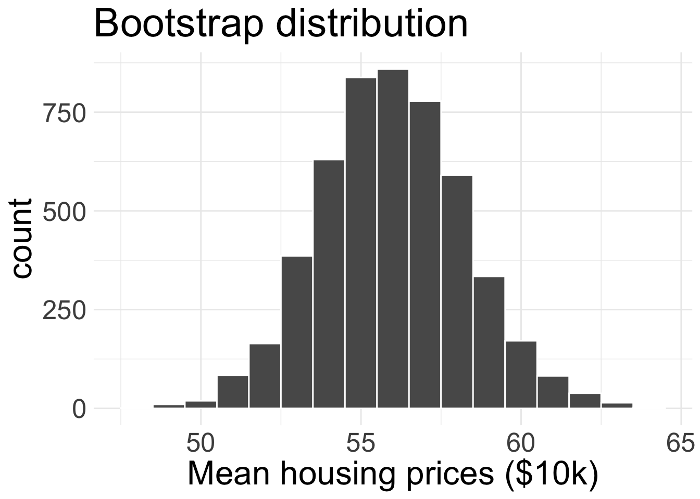
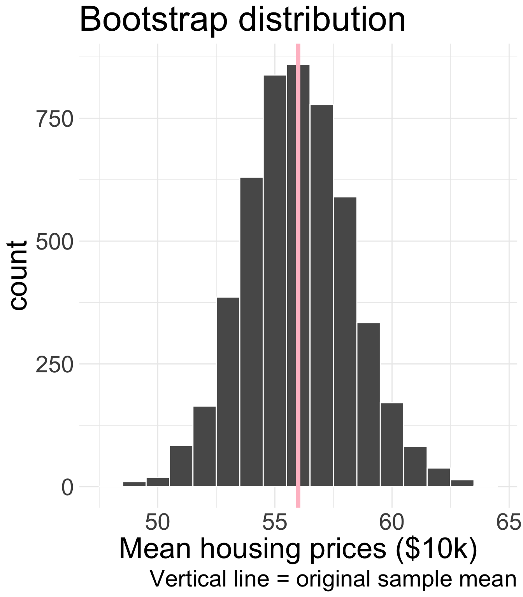
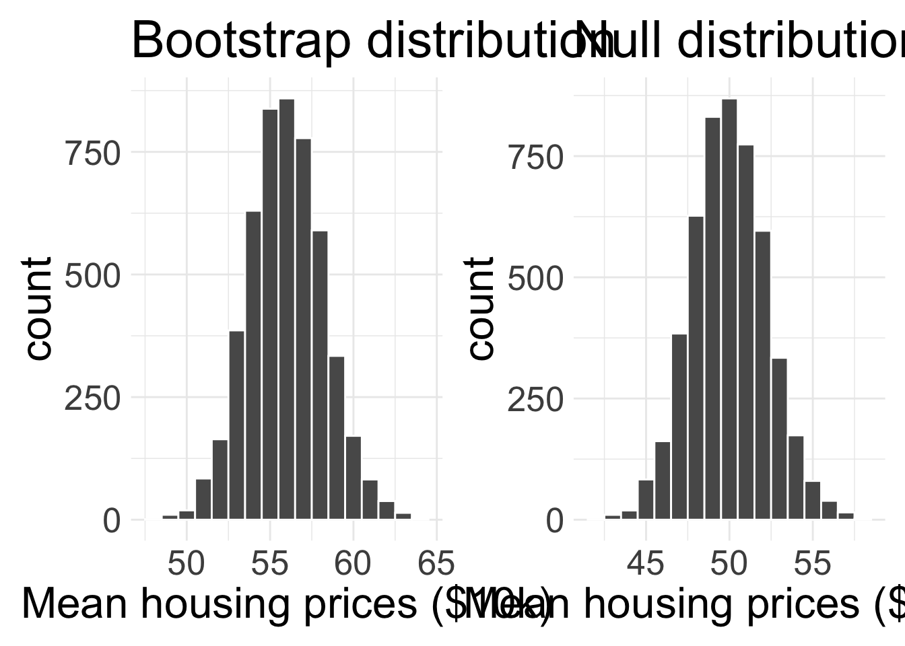
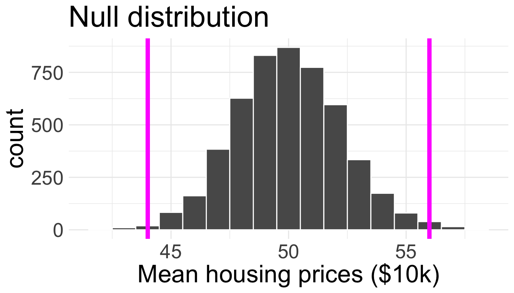
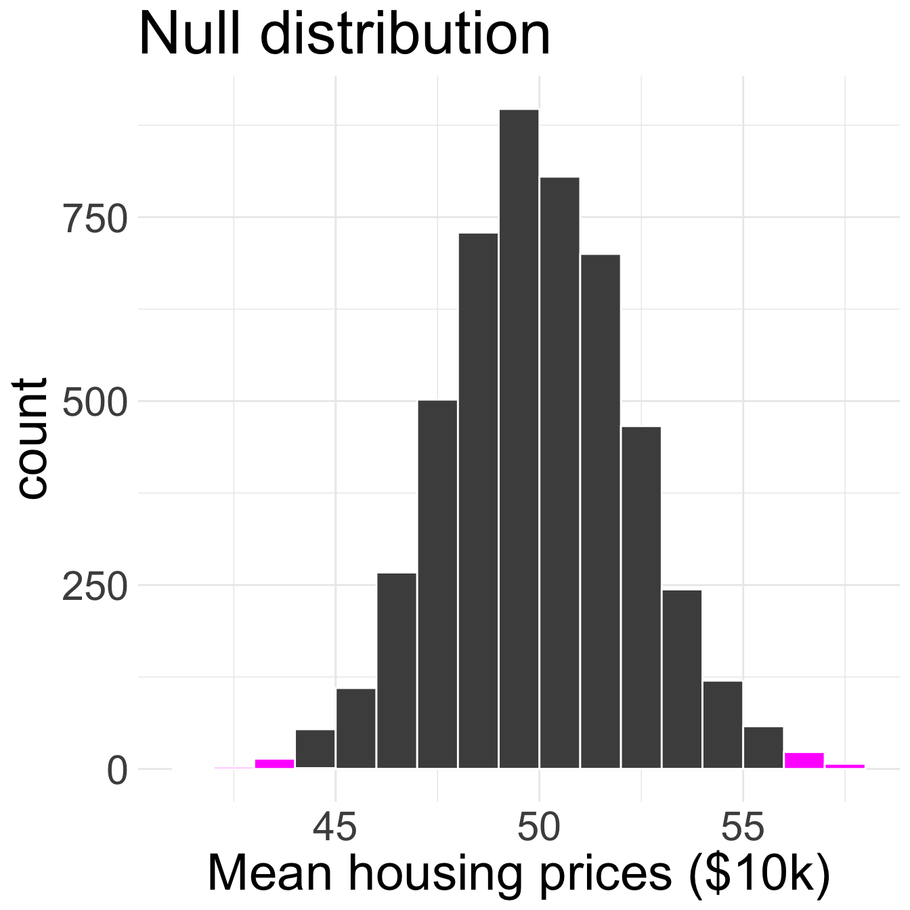

Hypothesis testing for a mean
Housekeeping
- Office hours tomorrow: 10:30am-12:00pm
Recap
We have seen how to perform hypothesis tests for questions involving the following:
A single proportion (STAT 201 sleep)
Independence of two categorical variables (banker sex discrimination)
- Think of as one population
Difference in two proportions (blood thinner)
- Think of as two populations
We are now going to see another hypothesis test, this time for numerical data
Test for a single mean
Running example + form hypotheses
We will use the duke_forest dataset provided in openintro. It provides data on some houses that were sold in the Duke Forest neighborhood of Durham, NC in November 2020.
Before we look at the data, we should form our hypotheses. Suppose I am interested in learning if the average price of houses in Duke Forest is $500,000 or not.
What might our hypotheses be?
- \(H_{0}\): \(\mu = 50\) versus \(H_{A}\): \(\mu \neq 50\), where \(\mu\) is the average house of prices in Duke Forest in $10,000
Collect data

The observed/sample mean housing price is $55.99 from a sample of 98 houses.
- Now we must determine if we have “convincing evidence”! Choose \(\alpha = 0.05\)
Simulating null distribution
To simulate from the null distribution, we need to operate in a world where \(H_{0}\) is true
So, I need to repeatedly simulate data sets of size 98 where the true mean is \(50\), without change anything else about the data sets.
If I don’t want to make any assumptions about how the data behave, how might I do that?
Bootstrap to the rescue
Recall the bootstrap: we repeatedly took resamples with replacement from our original data, of same size as original data
- Assuming the original data was representative, each one of these bootstrapped data sets gives us a plausible “new” sample of data, from which we can calculate statistics of interest

Where is the bootstrap distribution centered? Why does this make sense?
Bootstrap to null distribution

This is not the null distribution! The null distribution should be centered at \(\mu_{0} = 50\).
However, the null distribution should have the same variability in \(\bar{x}\) as the bootstrap distribution.
- So to get the null distribution, why not just shift the bootstrap distribution to be centered where we want it to be?
Shifting to the bootstrap distribution
In this example, bootstrap distribution is centered at \(\bar{x} = 55.99\)
In order to center this distribution at \(\mu_{0} = 50\), just subtract \(55.99 - 50 = 5.99\) to every single bootstrapped mean
- This will give us a simulated distribution for \(\bar{x}\) centered at 500000, which is exactly the null distribution!
- We call this “shifting the bootstrap distribution”, because we simply shift where the bootstrap distribution is centered
Null distribution

Notice where the distributions are centered
Obtain the p-value
\(H_{0}\): \(\mu = 50\) versus \(H_{A}\): \(\mu \neq 50\)
Our observed sample mean housing price is 55.99.
What does it mean to be “as or more extreme” now?
Two-sided alternative hypothesis
This is the first time we’ve seen a two-sided hypothesis
Since the alternative is “double sided”, we can be extreme in both the positive and negative direction!

Obtain the p-value (cont.)
Let \(d\) represent the amount we shifted the distribution by:
\[d = 55.99 - 50 = 5.99\]
Simulated means as or more extreme than \(\mu_{0} + d\) and \(\mu_{0} -d\) will contribute:

49 out of 5000 simulated sample means are as or more extreme than the observed \(\bar{x}\)
p-value \(\approx 0.0098\)
Make decision and conclusion
Make a decision and conclusion in the context of the research question.
- Since our p-value of 0.0098 is less than the significance level of 0.05, we reject \(H_{0}\). We have convincing evidence to suggest that the true average housing price of homes in Duke Forest in 2020 was not $50k.
Comprehension questions
Why did we shift the bootstrap distribution?
How do we estimate the p-value in the case of a two-sided alternative hypothesis?